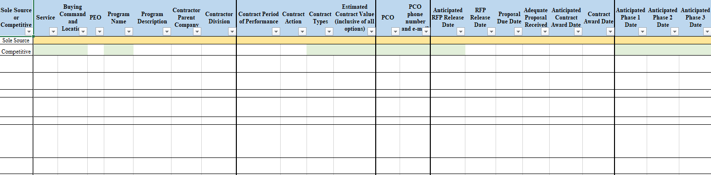
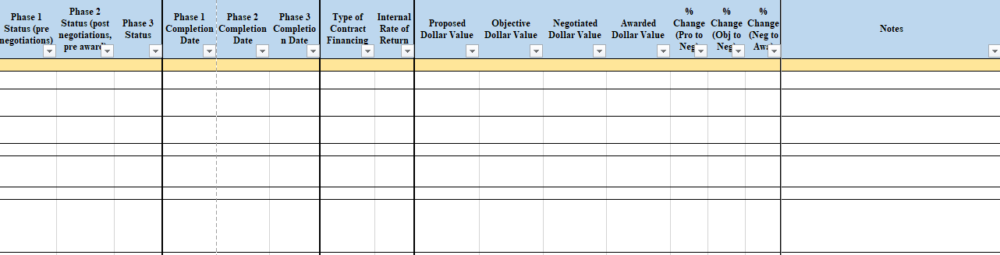

ANNEX 8 - PEER REVIEW ROLLING FORECAST
The official NMCARS regulation resides at https://www.secnav.navy.mil/rda/DASN-P/Pages/NMCARS.aspx
Reporting requirements. DON Contracting Activities shall submit quarterly, by March 10, June 10, September 10, and December 10, a rolling forecast of acquisitions requiring peer reviews by DASN(P) or DPC. Use the DON Peer Review Rolling Forecast spreadsheet format when submitting reports. Submit reports via email to mailto:usn.pentagon.asstsecnavrdadc.mbx.pabt@us.navy.mil with the subject: “DFARS 201.170 – Peer Review Rolling Forecast.” The electronic version of this template is available on the website https://www.secnav.navy.mil/rda/DASN-P/Pages/NMCARS.aspxidentified at NMCARS 5201.105-3 Copies..
DON Peer Review Rolling Forecast Spreadsheet

-continued columns on spreadsheet
